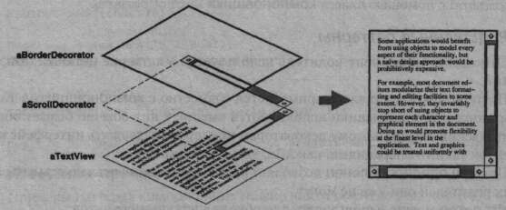
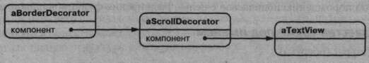
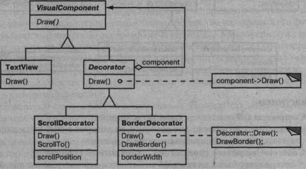
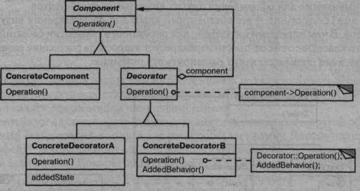
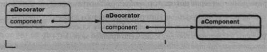
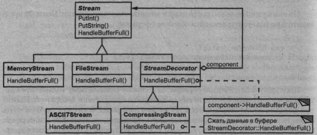

Приемы объектно-ориентированного проектирования
Паттерны проектирования
Глава 4. Структурные паттерны : Паттерн Decorator
Паттерн Decorator
Название и классификация паттерна
Декоратор - паттерн, структурирующий объекты.
Назначение
Динамически добавляет объекту новые обязанности. Является гибкой альтер- нативой порождению подклассов с целью расширения функциональности.
Известен также под именем
Wrapper (обертка).
Мотивация
Иногда бывает нужно возложить дополнительные обязанности на отдельный объект, а не на класс в целом. Так, библиотека для построения графических ин- терфейсов пользователя должна «уметь» добавлять новое свойство, скажем, рам- ку или новое поведение (например, возможность прокрутки к любому элементу интерфейса).
Добавить новые обязанности допустимо с помощью наследования. При насле- довании классу с рамкой вокруг каждого экземпляра подкласса будет рисоваться рамка. Однако это решение статическое, а значит, недостаточно гибкое. Клиент не может управлять оформлением компонента рамкой.
Более гибким является другой подход: поместить компонент в другой объект, называемый декоратором, который как раз и добавляет рамку. Декоратор следу- ет интерфейсу декорируемого объекта, поэтому его присутствие прозрачно для клиентов компонента. Декоратор переадресует запросы внутреннему компонен- ту, но может выполнять и дополнительные действия (например, рисовать рамку) до или после переадресации. Поскольку декораторы прозрачны, они могут вкла- дываться друг в друга, добавляя тем самым любое число новых обязанностей.
Предположим, что имеется объект класса Text View, который отображает текст в окне. По умолчанию Text View не имеет полос прокрутки, поскольку они не всегда нужны. Но при необходимости их удастся добавить с помощью декоратора ScrollDecorator. Допустим, что еще мы хотим добавить жирную сплошную рамку вокруг объекта TextView. Здесь может помочь декоратор BorderDecorat or. Мы просто компонуем оба декоратора с BorderDecorator и получаем искомый результат.
Ниже на диаграмме показано, как композиция объекта TextView с объекта- ми BorderDecorator и ScrollDecorator порождает элемент для ввода текс- та, окруженный рамкой и снабженный полосой прокрутки.
Классы ScrollDecorator и BorderDecorator являются подклассами Decorator - абстрактного класса, который представляет визуальные компонен- ты, применяемые для оформления других визуальных компонентов.
VisualComponent - это абстрактный класс для представления визуальных объектов. В нем определен интерфейс для рисования и обработки событий. Отме- тим, что класс Decorator просто переадресует запросы на рисование своему ком- поненту, а его подклассы могут расширять эту операцию.
Подклассы Decorator могут добавлять любые операции для обеспечения необ- ходимой функциональности. Так, операция ScrollTo объекта ScrollDecorator позволяет другим объектам выполнять прокрутку, если им известно о присут- ствии объекта ScrollDecorator. Важная особенность этого паттерна состоит в том, что декораторы могут употребляться везде, где возможно появление самого объекта VisualComponent. Поэтому клиент не может отличить декорированный объект от недекорированного, а значит, и никоим образом не зависит от наличия или отсутствия оформлений.
Применимость
Используйте паттерн декоратор:- a для динамического, прозрачного для клиентов добавления обязанностей объектам;
- а для реализации обязанностей, которые могут быть сняты с объекта;
- а когда расширение путем порождения подклассов по каким-то причинам не- удобно или невозможно. Иногда приходится реализовывать много незави- симых расширений, так что порождение подклассов для поддержки всех возможных комбинаций приведет к комбинаторному росту их числа. В дру- гих случаях определение класса может быть скрыто или почему-либо еще недоступно, так что породить от него подкласс нельзя.
Структура
Участники
- a Component (VisualComponent) - компонент: - определяет интерфейс для объектов, на которые могут быть динамичес- ки возложены дополнительные обязанности;
- a ConcreteComponent (TextView) - конкретный компонент: - определяет объект, на который возлагаются дополнительные обязанности;
- a Decorator - декоратор: - хранит ссылку на объект Component и определяет интерфейс, соответ- ствующий интерфейсу Component;
- a ConcreteDecorator (BorderDecorator, ScrollDecorator) - конкрет- ный декоратор: - возлагает дополнительные обязанности на компонент.
Отношения
Decorator переадресует запросы объекту Component. Может выполнять и дополнительные операции до и после переадресации.
езультаты
У паттерна декоратор есть, по крайней мере, два плюса и два минуса:- а большая гибкость, нежели у статического наследования. Паттерн декоратор позволяет более гибко добавлять объекту новые обязанности, чем было бы возможно в случае статического (множественного) наследования. Декоратор может добавлять и удалять обязанности во время выполнения программы. При использовании же наследования требуется создавать новый класс для каждой дополнительной обязанности (например, Bor.deredScrollableTextView, BorderedTextView), что ведет к увеличению числа классов и, как следствие, к возрастанию сложности системы. Кроме того, применение нескольких декораторов к одному компоненту позволяет произвольным образом соче- тать обязанности. Декораторы позволяют легко добавить одно и то же свойство дважды. На- пример, чтобы окружить объект Text View двойной рамкой, нужно просто добавить два декоратора BorderDecorators. Двойное наследование клас- су Border в лучшем случае чревато ошибками;
- а позволяет избежать перегруженных функциями классов на верхних уровнях иерархии. Декоратор разрешает добавлять новые обязанности по мере необ- ходимости. Вместо того чтобы пытаться поддержать все мыслимые возмож- ности в одном сложном, допускающем разностороннюю настройку классе, вы можете определить простой класс и постепенно наращивать его функци^ ональность с помощью декораторов. В результате приложение уже не пла- тит за неиспользуемые функции. Нетрудно также определять новые виды декораторов независимо от классов, которые они расширяют, даже если пер- воначально такие расширения не планировались. При расширении же слож- ного класса обычно приходится вникать в детали, не имеющие отношения к добавляемой функции;
- а декоратор и его компонент не идентичны. Декоратор действует как про- зрачное обрамление. Но декорированный компонент все же не идентичен исходному. При использовании декораторов это следует иметь в виду;
- а множество мелких объектов. При использовании в проекте паттерна деко- ратор нередко получается система, составленная из большого числа мелких объектов, которые похожи друг на друга и различаются только способом вза- имосвязи, а не классом и не значениями своих внутренних переменных. Хотя проектировщик, разбирающийся в устройстве такой системы, может легко настроить ее, но изучать и отлаживать ее очень тяжело.
Реализация
Применение паттерна декоратор требует рассмотрения нескольких вопросов:
- а соответствие интерфейсов. Интерфейс декоратора должен соответствовать ин- терфейсу декорируемого компонента. Поэтому классы ConcreteDecorator должны наследовать общему классу (по крайней мере, в C++);
- а отсутствие абстрактного класса Decorator. Нет необходимости определять абстрактный класс Decorator, если планируется добавить всего одну обя- занность. Так часто происходит, когда вы работаете с уже существующей иерархией классов, а не проектируете новую. В таком случае ответствен- ность за переадресацию запросов, которую обычно несет класс Decorator, можно возложить непосредственно на ConcreteDecorator;
- а облегченные классы Component. Чтобы можно было гарантировать соответ- ствие интерфейсов, компоненты и декораторы должны наследовать общему классу Component. Важно, чтобы этот класс был настолько легким, насколь- ко возможно. Иными словами, он должен определять интерфейс, а не хранить данные. В противном случае декораторы могут стать весьма тяжеловесными, и применять их в большом количестве будет накладно. Включение большого числа функций в класс Component также увеличивает вероятность, что кон- кретным подклассам придется платить за то, что им не нужно;
- а изменение облика, а не внутреннего устройства объекта. Декоратор можно
рассматривать как появившуюся у объекта оболочку, которая изменяет его
поведение. Альтернатива - изменение внутреннего устройства объекта, хо-
рошим примером чего может служить паттерн стратегия.
Стратегии лучше подходят в ситуациях, когда класс Component уже доста-
точно тяжел, так что применение паттерна декоратор обходится слишком
дорого. В паттерне стратегия компоненты передают часть своей функцио-
нальности отдельному объекту-стратегии, поэтому изменить или расширить
поведение компонента допустимо, заменив этот объект.
Например, мы можем поддержать разные стили рамок, поручив рисование
рамки специальному объекту Border. Объект Border является примером
объекта-стратегии: в данном случае он инкапсулирует стратегию рисования
рамки. Число стратегий может быть любым, поэтому эффект такой же, как
от рекурсивной вложенности декораторов.
Например, в системах МасАрр 3.0 [Арр89] и Bedrock [Sym93a] графические
компоненты, называемые видами (views), хранят список объектов-оформите-
лей (adoraer), которые могут добавлять различные оформления вроде границ
к виду. Если к виду присоединены такие объекты, он дает им возможность вы-
полнить свои функции. МасАрр и Bedrock вынуждены предоставить дос-
туп к этим операциям, поскольку класс View весьма тяжел. Было бы слишком
расточительно использовать полномасштабный объект этого класса только для
того, чтобы добавить рамку.
Поскольку паттерн декоратор изменяет лишь внешний облик компонента,
последнему ничего не надо «знать» о своих декораторах, то есть декораторы
прозрачны для компонента.

В случае стратегий самому компоненту известно о возможных расширени- ях. Поэтому он должен располагать информацией обо всех стратегиях и ссы- латься на них.
При использовании подхода, основанного на стратегиях, может возникнуть необходимость модифицировать компонент, чтобы он соответствовал ново- му расширению. С другой стороны, у стратегии может быть свой собствен- ный специализированный интерфейс, тогда как интерфейс декоратора дол- жен повторять интерфейс компонента. Например, стратегии рисования рамки необходимо определить всего лишь интерфейс для этой операции (DrawBorder, GetWidth и т.д.), то есть класс стратегии может быть лег- ким, несмотря на тяжеловесность компонента. Системы МасАрр и Bedrock применяют такой подход не только для оформ- ления видов, но и для расширения особенностей поведения объектов, свя- занных с обработкой событий. В обеих системах вид ведет список объектов поведения, которые могут модифицировать и перехватывать события. Каж- дому зарегистрированному объекту поведения вид предоставляет возмож- ность обработать событие до того, как оно будет передано незарегистриро- ванным объектам такого рода, за счет чего достигается переопределение поведения. Можно, например, декорировать вид специальной поддержкой работы с клавиатурой, если зарегистрировать объект поведения, который перехватывает и обрабатывает события нажатия клавиш.
Пример кода
В следующем примере показано, как реализовать декораторы пользователь- ского интерфейса в программе на C++. Мы будем предполагать, что класс компо- нента называется VisualComponent:
class VisualComponent {
public:
VisualComponent();
virtual void Draw();
virtual void Resize();
// ...
};
Определим подкласс класса VisualComponent с именем Decorator, от ко- торого затем породим подклассы, реализующие различные оформления:
class Decorator : public VisualComponent {
public:
Decorator(VisualComponent*);
virtual void Draw();
virtual void Resize();
// ...
private:
VisualComponent* „component;
};
Объект класса Decorator декорирует объект VisualComponent, на который ссылается переменная экземпляра _component, инициализируемая в конструкторе. Для каждой операции в интерфейсе VisualComponent в классе Decorator опре- делена реализация по умолчанию, передающая запросы объекту, на который ве- дет ссылка _component:
void Decorator::Draw () {
_component->Draw();
}
void Decorator: :Resize () {
_component->Resize ( ) ;
}
Подклассы Decorator определяют специализированные операции. Напри- мер, класс BorderDecorator добавляет к своему внутреннему компоненту рам- ку. BorderDecorator - это подкласс Decorator, где операция Draw замещена так, что рисует рамку. В этом классе определена также закрытая вспомогательная операция DrawBorder, которая, собственно, и изображает рамку. Реализации всех остальных операций этот подкласс наследует от Decorator:
class BorderDecorator : public Decorator {
public:
BorderDecorator (VisualComponent*, int borderWidth) ;
virtual void Draw();
private:
void DrawBorder ( int ) ;
private:
int _width;
void BorderDecorator :: Draw () {
Decorator : : Draw ( ) ;
DrawBorder (_width) ;
}
Подклассы ScrollDecorator и DropShadowDecorator, которые добавят визуальному компоненту возможность прокрутки и оттенения можно реализовать аналогично.
Теперь нам удастся скомпоновать экземпляры этих классов для получения различных оформлений. Ниже показано, как использовать декораторы для созда- ния прокручиваемого компонента Text View с рамкой.
Во-первых, нужен какой-то способ поместить визуальный компонент в окон- ный объект. Предположим, что в нашем классе Window для этой цели имеется операция SetContents:
void Window: : SetContents (VisualComponent* contents) {
// ...
}
Теперь можно создать поле для ввода текста и окно, в котором будет находить- ся это поле:
Window* window = new Window; TextView* textView = new TextView;
TextView - подкласс VisualComponent, значит, мы могли бы поместить его в окно:
window->SetContents(textView);
Но нам нужно поле ввода с рамкой и возможностью прокрутки. Поэтому пред- варительно мы его надлежащим образом оформим:
window->SetContents( new BorderDecorator( new ScrollDecorator(textView), 1 ) );
Поскольку класс Window обращается к своему содержимому только через ин- терфейс VisualComponent, то ему неизвестно о присутствии декоратора. Клиент при желании может сохранить ссылку на само поле ввода, если ему нужно работать с ним непосредственно, например вызывать операции, не входящие в интерфейс VisualComponent. Клиенты, которым важна идентичность объекта, также долж- ны обращаться к нему напрямую.
Известные применения
Во многих библиотеках для построения объектно-ориентированных интерфей- сов пользователя декораторы применяются для добавления к виджетам графичес- ких оформлений. В качестве примеров можно назвать Interviews [LVC89, LCI+92], ЕТ++ [WGM88] и библиотеку классов ObjectWorks\Smalltalk [РагЭО]. Другие ва- рианты применения паттерна декоратор - это класс DebuggingGlyph из библио- теки Interviews и PassivityWrapper из ParcPlace Smalltalk. DebuggingGlyph печатает отладочную информацию до и после того, как переадресует запрос на размещение своему компоненту. Эта информация может быть полезна для анали- за и отладки стратегии размещения объектов в сложном контейнере. Класс PassivityWrapper позволяет разрешить или запретить взаимодействие компо- нента с пользователем.
Но применение паттерна декоратор никоим образом не ограничивается гра- фическими интерфейсами пользователя, как показывает следующий пример, ос- нованный на потоковых классах из каркаса ЕТ++ [WGM88].
Поток - это фундаментальная абстракция в большинстве средств ввода/вы- вода. Он может предоставлять интерфейс для преобразования объектов в после- довательность байтов или символов. Это позволяет записать объект в файл или буфер в памяти и впоследствии извлечь его оттуда. Самый очевидный способ сде- лать это - определить абстрактный класс Stream с подклассами MemoryStream и FileStream. Предположим-, однако, что нам хотелось бы еще уметь:
- а компрессировать данные в потоке, применяя различные алгоритмы сжатия (кодирование повторяющихся серий, алгоритм Лемпеля-Зива и т.д.);
- а преобразовывать данные в 7-битные символы кода ASCII для передачи по каналу связи.
Паттерн декоратор позволяет весьма элегантно добавить такие обязанности потокам. На диаграмме ниже показано одно из возможных решений задачи.
Абстрактный класс Stream имеет внутренний буфер и предоставляет опера- ции для помещения данных в поток (Putlnt, PutString). Как только буфер за- полняется, Stream вызывает абстрактную операцию HandleBufferFull, кото- рая выполняет реальное перемещение данных. В классе Fi leSt ream эта операция замещается так, что буфер записывается в файл.
Ключевым здесь является класс StreamDecorator. Именно в нем хранится ссылка на тот поток-компонент, которому переадресуются все запросы. Подклас- сы StreamDecorator замещают операцию HandleBufferFull и выполняют до- полнительные действия, перед тем как вызвать реализацию этой операции в клас- се StreamDecorator.
Например, подкласс CompressingStream сжимает данные, a ASCII7Stream конвертирует их в 7-битный код ASCII. Теперь, для того чтобы создать объект FileStream, который одновременно сжимает данные и преобразует результат в 7-битный код, достаточно просто декорировать FileStream с использованием CompressingStream и ASCII7Stream:
Stream* aStream = new CompressingStream (
new ASCII7Stream(
new FileStream ( "aFileName")
)
);
aStream->Put!nt(12);
aStream->PutString("aString");
Родственные паттерны
Адаптер: если декоратор изменяет только обязанности объекта, но не его ин- терфейс, то адаптер придает объекту совершенно новый интерфейс.